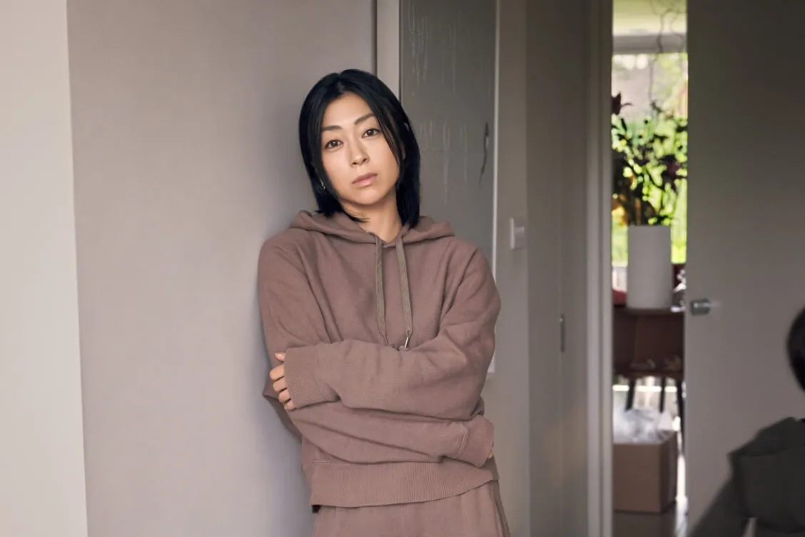

experimenting with various headings in html. There are various headings ranging from h1-h6.
Hikaru Utada, also known by the mononym Utada, is a Japanese-American pop singer, songwriter and producer. Utada is of the most influential and best-selling musical artists in Japan. Utada was born in the United States to Japanese parents, the record producer Teruzane Utada and the enka singer Keiko Fuji
Hikaru Utada "first Love" My favorite Japanese artist (unordered) :
My top 3 favorite foods (ordered):